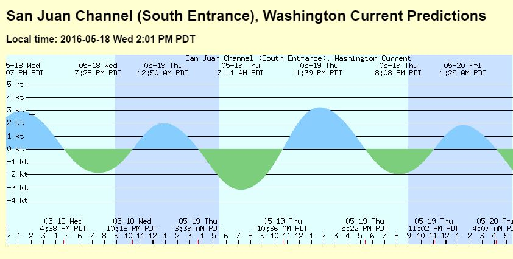

Currents
Currents


Emerald Diving
Explore the coastal and inland waters of
Washington and BC
Explore the coastal and inland waters of
Washington and BC




Current plays a major role in creating Western Washington’s unique and wonderful underwater ecosystem. Strong and persistent current carves many of the interesting walls, caves, reefs, and canyons that provide superb habitat for vertebrates and invertebrates alike. Current also serve as the conveyer belt that continuously delivers nutrient rich waters to the colorful filter feeders and smaller life forms that are critical to maintaining the rich food chain in our area.
I lived in fear of current during my first three years of recreational diving. Current has contributed to killing divers in Washington waters. With experience I have learned that current is to be respected and not feared. Many of the dive sites included in the guide section are periodically subjected to heavy current. With experience, proper planning, and keen observation you can avoid - or at least reduce - the ill effects of current. At times you can even use current to your advantage.
I dive very few sites in Washington without first consulting current tables. Although tables are available from a variety of sources, I consult http://tides.mobilegeographics.com/locations/5706.html. This free web-based service offers detailed interactive maps that allow me to see all current stations and correction locations. This map simplifies the task of finding the closest or most appropriate current information for the targeted dive site. If you don’t know how to read a current table, I strongly advise that you learn to do so before planning an open-water dive.
Current plays a major factor in my dive trip planning. I only visit the Western Strait of Juan de Fuca and the San Juan Islands when tidal exchanges are relatively light. This generally occurs in each region about every other week. Even when diving minimal tidal exchanges, I still plan dives at many sites around slack when the current theoretically slows down or stops before changing direction.
Remember - current tables are only predictions! Sometimes these predictions are wrong - either in timing and/or intensity. I let observation before and during the dive determine my course of action and never hesitate to abort a dive if I feel the least bit uncomfortable with the behavior of the current. I vividly remember one of my early dives at Sunrise Beach when I was diving at slack before flood on a moderate exchange. The current was not only stronger than what I expect, it was also headed the opposite direction. Having invested over ninety minutes to drive to Sunrise Beach from Seattle and hike down the long hill to the public beach access in full scuba gear, I was not going to be denied. I convinced myself the current would not be as strong at depth. I submerged and started for the wall, clinging to rocks and kelp to avoid being swept away. The current intensified substantially by the time I reached 25 feet. I could hardly hold on to rocks and any kelp I grabbed pulled free of the bottom. It then took me almost 20 minutes to travel 75 feet back to shore. I had to use my knife as a stake and dig it into the sediment to hold my position on my way back. I learned a valuable lesson about current and bravado on that day.
I lived in fear of current during my first three years of recreational diving. Current has contributed to killing divers in Washington waters. With experience I have learned that current is to be respected and not feared. Many of the dive sites included in the guide section are periodically subjected to heavy current. With experience, proper planning, and keen observation you can avoid - or at least reduce - the ill effects of current. At times you can even use current to your advantage.
I dive very few sites in Washington without first consulting current tables. Although tables are available from a variety of sources, I consult http://tides.mobilegeographics.com/locations/5706.html. This free web-based service offers detailed interactive maps that allow me to see all current stations and correction locations. This map simplifies the task of finding the closest or most appropriate current information for the targeted dive site. If you don’t know how to read a current table, I strongly advise that you learn to do so before planning an open-water dive.
Current plays a major factor in my dive trip planning. I only visit the Western Strait of Juan de Fuca and the San Juan Islands when tidal exchanges are relatively light. This generally occurs in each region about every other week. Even when diving minimal tidal exchanges, I still plan dives at many sites around slack when the current theoretically slows down or stops before changing direction.
Remember - current tables are only predictions! Sometimes these predictions are wrong - either in timing and/or intensity. I let observation before and during the dive determine my course of action and never hesitate to abort a dive if I feel the least bit uncomfortable with the behavior of the current. I vividly remember one of my early dives at Sunrise Beach when I was diving at slack before flood on a moderate exchange. The current was not only stronger than what I expect, it was also headed the opposite direction. Having invested over ninety minutes to drive to Sunrise Beach from Seattle and hike down the long hill to the public beach access in full scuba gear, I was not going to be denied. I convinced myself the current would not be as strong at depth. I submerged and started for the wall, clinging to rocks and kelp to avoid being swept away. The current intensified substantially by the time I reached 25 feet. I could hardly hold on to rocks and any kelp I grabbed pulled free of the bottom. It then took me almost 20 minutes to travel 75 feet back to shore. I had to use my knife as a stake and dig it into the sediment to hold my position on my way back. I learned a valuable lesson about current and bravado on that day.